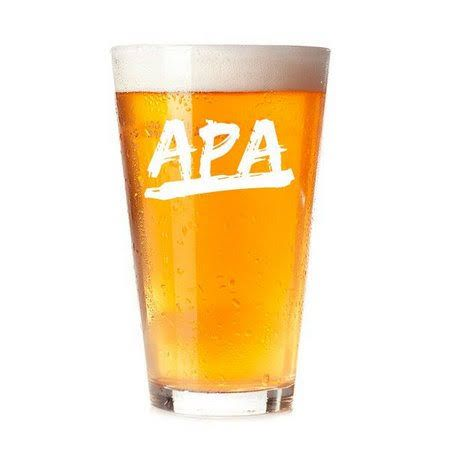

Beer Description
A pale, refreshing and hoppy ale, yet with sufficient supporting malt to make the beer balanced and drinkable. The clean hop presence can reflect classic or modern American or New World hop varieties with a wide range of characteristics. An average strength, hop forward, pale, American craft beer.
Ingredients
- 8.5 lbs (3.86 kg) American two-row malt
- 0.25 lb (113 g) Crystal malt (20 °L)
- 0.5 lb (226 g) CaraVienne malt
- 7 AAU Columbus whole hops (0.5 oz/14g at 14% alpha acids) (60 min.)
- 0.5 oz (14 g) Centennial whole hops 11% alpha acids (15 min.)
- 0.5 oz (14 g) Cascade whole hops 6% alpha acids (5 min.)
- 1 oz (28 g) Cascade whole hops 6% alpha acids (0 min.)
- 1.5 oz (42 g) Centennial whole hops 11% alpha acids (dry)
- Wyeast 1272 (American Ale II) yeast
Step by step
- Mill grains and dough-in using RO water until a medium thickness mash is achieved. Treat mash with 1 tsp calcium chloride. Hold mash at 152 °F (67 °C) until conversion is complete. Sparge slowly with 170 °F (77 °C) RO water treated with 2 tsp phosphoric acid, collecting 6 gallons (22.7 L). Bring wort to a boil.
- After the hot break, add the first charge of bittering hops. Boil for 60 additional minutes, adding the other hops per the hopping schedule. Allow the wort to rest for 5 minutes, then chill rapidly to 65 °F (18 °C). Rack to fermenter, leaving break material behind. Oxygenate, pitch the yeast, and ferment at 68 °F (20 °C). Fermentation should be done in less than a week, but don’t rush it.
- After the yeast has mostly settled, prepare a secondary fermenter (carboy). Blow in some CO2 to displace any oxygen, add the dry hops and rack the fermented beer on top of the dry hops, minimizing splashing. Leave the beer in contact with the hops for a week.
- Rack to a keg and force carbonate, or rack to a bottling bucket, add priming sugar and bottle. Target a carbonation level of 2 to 2.5 volumes.
- Variation:Add 0.5 lb (0.45 kg) Orange Blossom honey in the last 15 min of the boil.